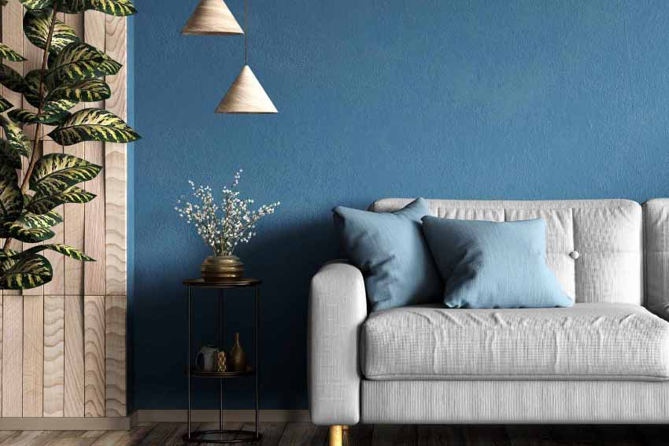

Painting is a beautiful form of art that allows people to express their thoughts and feelings through colours. It brings creativity and happiness into our lives. People use different colours, brushes, and techniques to create beautiful pictures. Painting is also a relaxing activity that reduces stress.
Read More...Painting is a beautiful form of art that allows people to express their thoughts and feelings through colours. It brings creativity and happiness into our lives. People use different colours, brushes, and techniques to create beautiful pictures. Painting is also a relaxing activity that reduces stress.
Read More...Painting is a beautiful form of art that allows people to express their thoughts and feelings through colours. It brings creativity and happiness into our lives. People use different colours, brushes, and techniques to create beautiful pictures. Painting is also a relaxing activity that reduces stress.
Read More...Painting is a wonderful form of art allows people to express their thoughts and feelings through colours. It helps us improve our creativity and imagination. Different colours make paintings attractive and beautiful.
Painting plays an important role in our daily lives. It helps children and adults develop artistic skills and creative thinking. People use pencils, brushes, watercolours, and acrylic paints to create beautiful pictures. Painting is a great hobby that improves concentration and gives us a sense of achievement.
